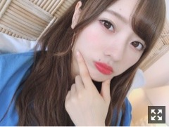
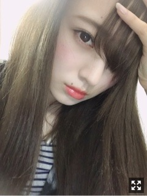

寒さが戻ってきたぞーーー
みなさまこんにちは！
乃木坂46の
梅澤美波です！

乃木中にて３週に渡って
沖縄罰ポイント精算ツアー放送中です！
ひたすら楽しかったです！
バナナマンさんとのロケも初めてで
ご飯も美味しくて
たくさん笑った2日間でした◎
前回の放送でわたしは勝ち抜いたので
美ら海水族館に行きました︎︎︎︎✌︎
中学生ぶりの沖縄！
中学生ぶりの美ら海水族館！！
癒されたなあ
わたしは海月がすきです、
ナマコを触る勇気が無くて
結局触らず帰ってきました( .. )（笑）
れんかちゃんはホテルで私の部屋で
一緒に寝ました❁︎ふふ
やっとセラミュのDVDが観られました！
いや〜懐かしい、、
なんというんでしょう
あの時期毎日楽しくて生き生きしてて
そんな日々が終わってしまったことに
そして思い出して過去になってしまったことに
なんだか寂しさすら感じました
もちろん、楽しいことだけじゃなくて
辛いことを乗り越えたからこそ
見えたもの、感じたことがたくさんあって
大好きな人達に囲まれて毎日舞台に立てて
とにかく、とにかく幸せでした
チームSTARがひたすら愛おしくて仕方が無いです！
戦士として生きた去年の夏を
一人でしんみり思い返しました！
こうして形として残せて、
劇場に来れなかった方の元へも
届けることが出来て本当に幸せです。
たくさんの方に観ていただきたい作品です。
ぜひ！
七ステDVDも！
アニメ 「七つの大罪 神々の逆鱗」
今年の秋放送決定しましたね！
楽しみすぎてどうしましょう
ずーーっと待っていました！嬉しい！！
漫画ももう一度読み直さなきゃ！
初めて形になった
大切な作品たちです。
５月には舞台「ザンビ」も
DVD&Blu-rayが発売になります！
ぜひ、お手に取ってみてください
大切なものが増えていきます。◎
あやちゃん
会うと迫ってきます近づいてきます
くっついてきます
年上とは思えないほど懐っこいあやちゃんです
落ち着きます！かわいいのです
お稽古頑張ってるかなあ〜
お知らせ◎
〜雑誌
▽「OVERTURE」
▽「B.L.T.」
▽「with」
▽「日経エンタテインメント！」
発売中です！
▽「with ６月号」
小林由依さんと撮影させて頂きました！
とっても緊張しましたが、、
ゆいさんがとても優しく、
リラックスして撮影できました(；；)
ぜひチェックしてみてください〜
▽５／８ 「週刊少年マガジン」
ソロで撮影して頂きました！！
普段大人っぽく撮っていただくことが
多いですが、この日はナチュラルに
笑顔たくさんの撮影でした！
いつもの私とは少しだけ違う顔が見られるかと思います。
▽５／９ 「BOMB」
未央奈さんと与田と3人で
撮影して頂きました！
春っぽい衣装や、
なかなか面白いシチュエーションだったり、、
見所満載かと思います！！
▽５／１５ 「EX大衆」
与田と二人で取材して頂きました！
ふたりはなかなか珍しくてですね
撮影ではひたすら
いちゃいちゃして欲しいと言われまして
ずっと与田にくっついてましたよ〜
ぜひチェックしてみてくださいっ！
〜イベント
▽４／２０ 「TGC KUMAMOTO 2019 by TOKYO GIRLS COLLECTION」
▽４／２７ 「SAPPORO COLLECTION 2019」
▽４／２８ 4th アルバム 「今が思い出になるまで」
個別握手会@インテックス大阪
▽５／１ 4th アルバム 「今が思い出になるまで」
個別握手会@幕張メッセ
〜ラジオ
▽４／１４ 文化放送「乃木坂46の 『の』」
このたび、新MCを努めさせて頂くことになりました！！
この収録日の打ち合わせ時に初めて知りまして、、とても驚きました(；；)
すごく不安もありますが、
少しでも貢献出来たらなと思います
よろしくお願いします！
大好きな土生さん❤︎
TGCで、
special collectionもKBFさんも
ステージが一緒で
本当に心強かったです(；；)
早くご飯行きたいな〜❁︎
special collectionを歩かせて頂いたこと、
物凄く光栄でしたし、
ショーの一発目ということもあり
信じられないくらい緊張しましたが
とても貴重な経験をさせて頂きました。
今月は来週末の熊本でのTGC、
そして札幌コレクションと続きます。
毎回成長を見せられるよう
精一杯努めさせて頂きます！
4thアルバム
『今が思い出になるまで』発売間近です！！
今作も素敵な曲ばかりです。
リード曲の「ありがちな恋愛」、
デモ曲を頂いた時から
ああ、好きだなあ、と一瞬で
心奪われた楽曲でした。
完成したものを毎日聴いてしまいます、
歌詞もメロディもすごく好きです！
たくさんの方に愛される作品になりますように( ¨̮ )

前髪がすーーぐ伸びます(これは数ヶ月前のわたしです〜
定期的にカットします
前髪にはこだわりありますよね、
決まらないとちょっと気分落ちたりしますよね
ぱっつん前髪とか
挑戦してみたいものです
安定を求める人間なので
なかなかチャレンジできません
長くなりました。( .. )
では！
おやすみなさい
何もせず過ごす一日があったとしても
未来の自分が振り返った時に
きっと戻りたい一日になるんだろうな〜と思ったら
ああ、無駄に出来ないなあ
数分でさえ有効に使いたいな〜と思うのです
なので最近はお休みの日でも絶対に外へ繰り出します、そんな梅澤です
Original：https://www.nogizaka46.com/s/n46/diary/detail/49963?ima=4944&cd=MEMBER